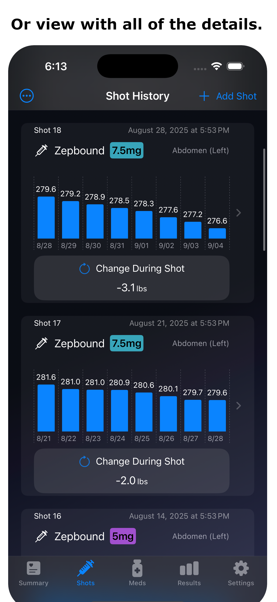
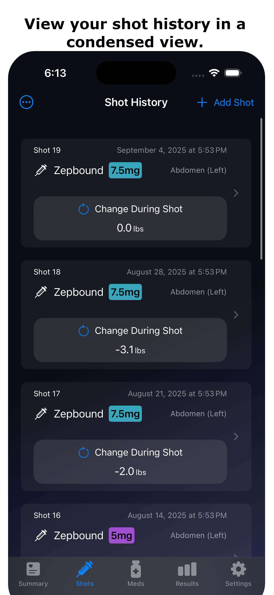

Welcome to the support page for the GLP Track iOS App.
Custom GLP‑1 tracking. Simplified.
Record, track, and meet your goals with GLP Track, the free tracking tool designed for users of GLP-1 medications like Ozempic®, Mounjaro®, Wegovy®, and Zepbound®.

